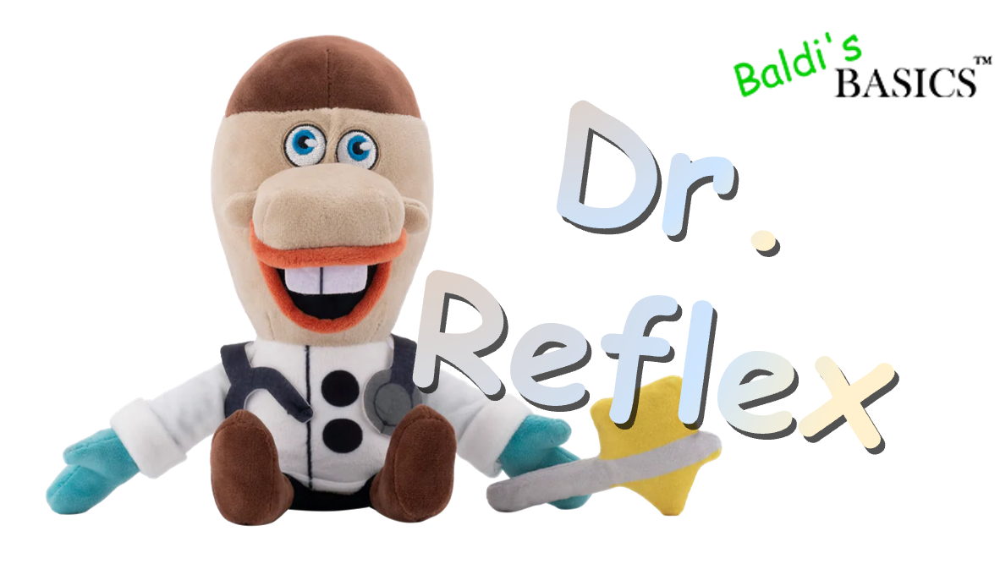

By Micah McGonigal - Basically Games!
Hello everyone! I'm happy to announce that Baldi's Basics Plus version 0.7 is available now!
This update is entirely focused on bringing field trips back to the game so that now you can go camping again! Field trips work a bit differently now, though. You will now be able to find the bus in The Pitstop before level 3, and you'll need to bring a bus pass with you if you want to take a ride to the field trip! You can find the bus pass on level 2, so make sure you grab it!
When you go on a field trip, you'll be able to pick one of two minigames to play. When you win a minigame you'll get items that you can bring back with you. With a little bit of practice, you can even earn a perfect bonus of 250 YTPs!
As before, each minigame also has a score based variant and a high score table, so you can compete with others!
That's about it for the update, but before I move on to the changelog, I'm also excited to announce that I've teamed up with Makeship again to make a Dr. Reflex plushie! You can check it out
here!
Product inserted

Doctor Reflex Plushie! Available for limited time!
Thiiiiiiiiiiiink... FAST!
Dr. Reflex is now making house calls! If you're in need of a checkup, Dr. Reflex's unique reflex testing methods are a sure way to heal what ails you. He may not have a license, but that doesn't mean you should be afraid of the included, attachable percussion hammer!
Basically Games
Available until 28 Sep • 29,99US$
I worked closely with the team at Makeship to make sure all the details were just right and I couldn't be much happier with how it turned out! It will be available to purchase until September 28, so thiiiiiink fast and get it before then if you want one.
Now, on to the changelog:
Additions
● Added new field trip format.
○ Field trips now havre 3D, explorable hub areas.
○ Each field trip now has two minigames to choose from.
○ Winning a field trip minigame spawns in eight items that the player can pick. The player can pick up to three of these items.
○ Playing a minigame perfectly rewards the player with a perfect bonus of 250 YTPs.
● Re-added camping trip.
○ Added new minigame Campfire Frenzy: Keep the fire roaring by launching fuel into it. Watch out though, not all fuel is good for the fire!
○ Added new minigame Pick-Quick-Nic: Be quick to pick a bite to eat before Baldi's appetite gets the better of him! Don't take his favorite food though!
● Added a tutorial for each minigame. Tutorials can be accessed by clicking on a Baldi that is standing nearby a minigame area.
● Added new music for minigames.
● Added the Bus Pass item. This item must be in your inventory when clicking the bus door to go on a field trip.
Changes
● You now must click on the bus door to go on a field trip, rather than just walking up to the bus.
● The bus sprite has been updated to a rendered 3D object that better matches the game's style. Baldi finally gave the bus back to Joe after "borrowing" it for six years.
● The bus now has collision.
● Items can no longer be used in The Pitstop. This prevents several bugs from occurring.
● The Pitstop now gives the player unlimited stamina.
I think that's everything. I hope you all enjoy version 0.7 and look forward to version 0.8!
Related game

Baldi's Basics Plus
Downloadable for Windows